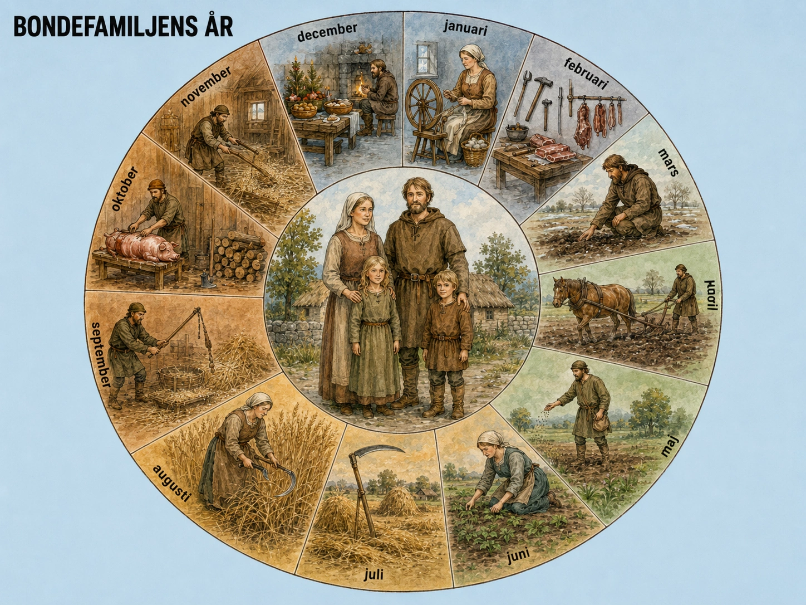

Året, inte klockan
Vår vardag styrs av klockan. Vi vaknar vid en viss tid, går till skolan eller jobbet, äter lunch, går hem, sover. Veckodagen spelar roll. Men månaden eller årstiden spelar mindre roll — vi äter ungefär samma mat året om, klär oss för värmen eller kylan, men i grund och botten ser oktober ut som mars.
För en medeltida bondefamilj var det tvärtom. Veckodagen spelade liten roll — månaden var allt. Vad du gjorde i januari hade ingenting att göra med vad du gjorde i juli. Hela året var en cykel av arbete, vila, hopp och fruktan. Vi följer ett år genom en typisk nordeuropeisk bondefamilj på 1200-talet — kanske i södra Sverige, kanske i norra Tyskland — för att förstå hur deras värld byggdes.

Januari — vinterns djup
Januari var årets mörkaste och kallaste månad. Dagarna var korta — i Norden bara några timmar ljus. Mycket av familjens tid tillbringades inomhus, runt eldstaden i den ena rummet hus.
Men arbetet upphörde inte. Djuren skulle skötas — kor mjölkas, höns matas, får tas hand om. Ladan måste hållas torr. Veden måste huggas och bäras in. Tröskning av föregående års säd kunde fortsätta på natten med slaga (ett enkelt redskap).
För kvinnor och flickor var detta spinningens och vävningens tid. Ull från fårklippningen om sommaren spanns till garn på sländan. Senare vävdes garnet till tyg på vävstolen. Hela familjens vinterkläder, sängkläder, dukar och säckar gjordes av detta arbete.
Maten var begränsad och torr. Salt fläsk, torkad fisk, bröd, gröt, kål, lök, rovor, ärtor. Öl var den vanligaste drycken. Färska grönsaker var en avlägsen sommarminne. Och hela tiden vakade samma fråga: räcker maten till våren?
Februari–mars — frostens slut
När dagarna blev längre växte arbetet utomhus. Redskap som gått sönder under hösten lagades inför nästa säsong. Plogen kontrollerades och vässades. Selar lagades. Verktyg sliparades.
I februari skedde ofta slakten av djur som inte kunde försörjas fram till våren. Det var ett tungt beslut — varje slaktat djur var en framtida förlust av mjölk, ull eller arbete. Men det var också ett tillfälle av mat: färskt kött, blodpudding, korv. Konserverat med salt och rök kunde det räcka länge.
I mars började marken tina på de varmare platserna. Bonden gick ut och kände på jorden — när den var torr nog att plöjas? Var det fortfarande för blött? Det krävde erfarenhet och fingertoppskänsla. Plöjer du för tidigt blir jorden förstörd. Plöjer du för sent blir du försenad.
April–maj — såningstid
När jorden tinat ordentligt började det verkliga arbetet. Vårsådden krävde några intensiva veckor.
Plöjningen var det första steget. På en gård med oxar tog det dagar att plöja byns åkrar. På en gård med hästar gick det snabbare. Bonden gick efter plogen, höll i styret, höll redskapet rätt i jorden. Barnen ledde dragdjuren.
Sedan harvades jorden för att bryta upp klumpar. Och så själva såningen — bonden gick över åkern och kastade fröna med jämna armrörelser i en koreograferad rytm som lärts från far till son. Bra sådd såg ut som en jämn dusch över marken. Dålig sådd lämnade luckor som skulle leda till luckor i skörden.
I treskiftesbyar sådde man korn, havre, ärtor och bönor på vårsidan. Höstgrödan — råg eller vete — låg redan i jorden sedan föregående höst.
Efter sådden harvade man jorden lätt igen för att täcka fröna. Och så bara hoppades man — att solen skulle komma, att regnet skulle komma i lagom mängd, att frosten inte skulle återvända, att fåglar och insekter inte skulle förstöra för mycket.
Juni — den ljusa månaden
I juni var dagarna långa. I norra Europa kunde solen vara uppe från klockan fyra på morgonen till tio på kvällen. Det var arbetsdagar utan slut.
Ogräset växte lika snabbt som grödorna. Familjen var ute hela dagarna, böjd över åkrarna, rensade ogräs för hand eller med små redskap. Det var monotont, ryggvärksbringande arbete. Men nödvändigt — utan ogräsrensning kunde grödan kvävas.
Samtidigt fanns djuren som skulle skötas, höns vakta från räv, getter mjölka, kor leda till bete. Och hela tiden — fortsatt arbete på godsherrens åkrar, dagsverkena som måste utföras.
I trädgården nära huset växte sommarens grönsaker. För första gången på månader fanns färska grödor: rovor, lök, kål, krydd-örter. Det var ett välkommet tillskott efter vintens torrkost.
Juli — hötiden
Juli var höslåtterns månad. Det var ett av årets mest brådskande arbete. Höet var djurens vinterföda — utan hö ingen mat åt djuren, utan djur ingen mjölk, ingen ull, ingen dragkraft.
Höslåttern var kollektivt arbete. Byns vuxna män samlades vid gräsmarkerna med liar — krokiga, slipade redskap som kunde skära gräset i breda svep. Kvinnor och barn räfsade ihop det avskurna gräset och bredde ut det för torkning.
Vädret var allt. Regn under höslåttern var en katastrof — det blöta gräset möglade och blev oätbart för djuren. Bra höslåtter krävde flera dagar av sol i rad. Bondefamiljer höll noga koll på molnen, vinden, lukten av luften. Säsongens skicklighet i att läsa väder kunde betyda skillnaden mellan välmående djur och vinterkatastrof.
När höet var torrt samlades det i stora stackar — antingen ute på fält eller hemma vid ladan. Det bästa höet, från de bästa ängarna, gick till mjölkkorna. Det grövre gick till oxar och får.
Augusti — skördens början
När juli övergick i augusti började skördetiden — årets viktigaste och mest intensiva arbete. Hela det gångna årets arbete kulminerade i några korta veckor då skörden måste tas in innan den förstördes av regn, frost eller bortskämda av sjukdomar.
Spannmål skars med skäror eller liar. Familjen arbetade från gryning till skymning. Barn samlade in ax som ramlade av (efterskörd). Spannmålet bands i kärvar, ställdes i kammar för torkning, och kördes till ladan.
Och här kom dagsverkenas tunga moment. Just när bondens egen skörd skulle räddas behövde också godsherren sin skörd inhöstad. Bonden tvingades arbeta på herrens åkrar samtidigt som hans egna stod ute i regnet. Den här konflikten var inbyggd i hela det feodala systemet — och en av dess hårdaste sidor.
September — höstsådd och tröskning
När sommarskörden var bärgad började höstsådden. Råg och vete sattes i jorden, för att gro lätt i den fortfarande varma marken och övervintra som små plantor under snön. Det var ett genidrag av medeltidens jordbrukare — att utnyttja den varma höstjorden för att få en försprångad start på nästa års skörd.
Samtidigt började tröskningen — den långa processen att slå loss kornen från axen. Det gjordes med slaga, ett enkelt redskap av två träbitar förbundna med läder. Slag, slag, slag, mot säden som låg på logen. Det var långsamt arbete som pågick under hela hösten och vintern.
I september skedde också insamlandet av äpplen, nötter, bär och svamp. Det som inte konsumerades direkt torkades, syltades eller saltades för vintern.
Oktober — slakttid och beredelse
Oktober var slakttidens månad. Djur som inte kunde försörjas över vintern slaktades nu — när kylan började och kött kunde lagras utan att förstöras. Grisar, gamla kor, överskotts-får. Köttet saltades, röktes eller torkades. Blod blev korv eller blodpudding. Inget kastades.
Bondefamiljen samlade också ved för vintern. Skogen erbjöd torra grenar, fallna träd, lågt riskved. Att samla nog för en hel vinter var ett av höstens viktigaste arbeten — kall vinter utan ved var farligt.
I oktober kontrollerades också taken, väggarna och dörrarna inför vintern. Sprickor fylldes med lera och halm. Fönster — där sådana fanns — täcktes med oljat tyg eller djurhud. Allt som kunde släppa in kallt drag måste tätas.
November–december — mörker och tro
När de korta dagarna kom upphörde det utomhusarbete som varit hela året. Hus och djurstall var huvudplats. Det här var mörkrets och tröskningens månader. Bonden tröskade sin spannmål dagar i sträck. Kvinnan spann och vävde. Barnen tog hand om mindre uppgifter.
Och så kom julen. Den var årets viktigaste högtid — inte bara religiöst utan socialt. Det var den enda perioden då man verkligen åt sig mätt. Slaktköttet från oktober kom fram. Vinets eller mjödets sista rester dracks. Familjen samlades, grannar besöktes, kyrkans midnatts-mässa firades.
Efter jul kom "de tolv dagarna" — perioden mellan jul och trettondagen då allt arbete pausade. Det var det enda riktiga "vilo-fönstret" på hela året. Sedan började cykeln om: januari, mörker, kyla, väntan, hopp.
Året och livet
När man läser detta är det lätt att se det romantiskt: bondefamiljens nära förhållande till naturen, årstidernas rytm, byns gemenskap. Och det är inte fel — det fanns sådant.
Men det är också viktigt att inte glömma vad detta liv egentligen var. En aldrig avtagande arbetstakt med marginal mellan överlevnad och katastrof. En dålig sommar kunde betyda hunger. En djurslakt kunde rädda en hård vinter — men förlora en familj dess framtida mjölkproduktion. Beslut som vi knappt kan föreställa oss togs varje vecka.
Den medeltida bondefamiljens år är inte en pittoresk bild av "förr i tiden". Det är en konkret påminnelse om hur tunt livet låg för de flesta människor genom större delen av historien. De som överlevde gjorde det med varje vakentid av varje dag av varje år.
Och det är just denna oavtagande mänskliga arbete — utförd av människor utan namn, utan testamenten, utan sina egna ord bevarade — som lade grunden för allt vi idag kallar "medeltidens Europa". Katedraler, universitet, riddare, korståg, kungar, drottningar — allt vilar i sista hand på bonden som plöjer i april, sår i maj, slår i juli, skördar i augusti, sår i september, slaktar i oktober, tröskar i november och firar jul i december.
Året som styrde livet — och som byggde medeltidens Europa.